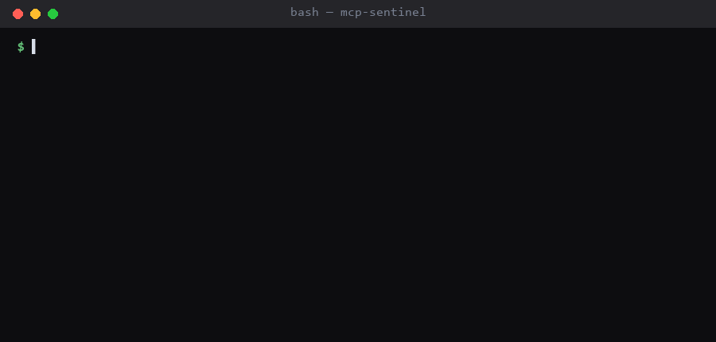

mcp-audit
An MCP security scanner. Audit an MCP server before you let an agent near it.


View on GitHub Install from PyPI
mcp-audit is a command-line security scanner for
MCP (Model Context Protocol) servers. It scans a server for
prompt injection in tool descriptions, hardcoded secrets, dangerous code
execution paths, and unsafe defaults — locally, with no account and
no network calls.

Why MCP servers need their own scanner
Connecting an agent to an MCP server hands that server two things at once: code execution on your machine, and a direct line to the model's context. The second is what makes MCP different from an ordinary dependency.
A tool's description field is not documentation for humans — it
is fed to the LLM as instruction. A server author, or whoever compromised
one, can write a description that tells your agent to do something you never
asked for, and a code review that only reads the implementation will not see
it. There are now
20,000+ MCP servers in public directories.
Install and scan
pip install mcp-audit
git clone https://github.com/some-org/some-mcp-server
mcp-audit scan ./some-mcp-serverWhat it detects
| Rule | Check |
|---|---|
| MCP001 | Prompt injection / tool poisoning in a tool description |
| MCP002 | Hidden or invisible unicode in a description |
| MCP003 | Suspiciously long description (payload smuggling) |
| MCP004 | Over-broad capability advertised by a tool |
| MCP005 | Tool schema accepting arbitrary unvalidated input |
| MCP101 | Dangerous code execution sink (eval, exec, new Function) |
| MCP102 | Shell command built from untrusted input |
| MCP103 | Unsafe deserialisation (pickle.loads, unsafe yaml.load) |
| MCP201 | Hardcoded secret or credential |
| MCP301 | Server bound to all network interfaces |
| MCP302 | Authentication or trust check disabled |
Plus any custom rules you define in .mcpaudit.toml.
Use it in CI
GitHub Action
- uses: YashkantG/mcp-audit@main
with:
path: ./my-mcp-server
fail-on: highSARIF into GitHub Code Scanning
- uses: YashkantG/mcp-audit@main
with:
path: ./my-mcp-server
format: sarif
upload-sarif: "true"pre-commit
repos:
- repo: https://github.com/YashkantG/mcp-audit
rev: v0.3.0
hooks:
- id: mcp-auditRuns entirely on your machine
mcp-audit makes zero network calls. It does not phone home, does
not upload your code, and has no telemetry. Runtime dependencies are
typer, rich, and tomli on Python < 3.11.
Releases publish through
PyPI Trusted Publishing,
so each one traces back to the GitHub Actions run that built it.
If a security team needs to approve it: read the source, then run it with no network access at all. It does not need any.
Contributing
Issues and pull requests welcome — especially new rules, more language coverage, and real servers that break it. False positives are treated as real bugs. See CONTRIBUTING.md or pick up a good first issue.